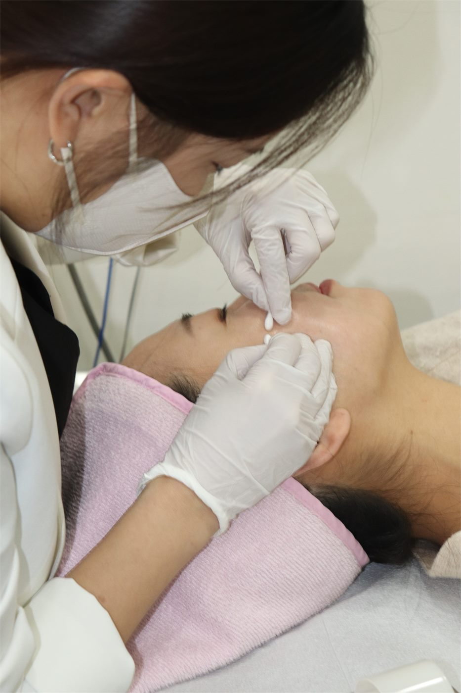
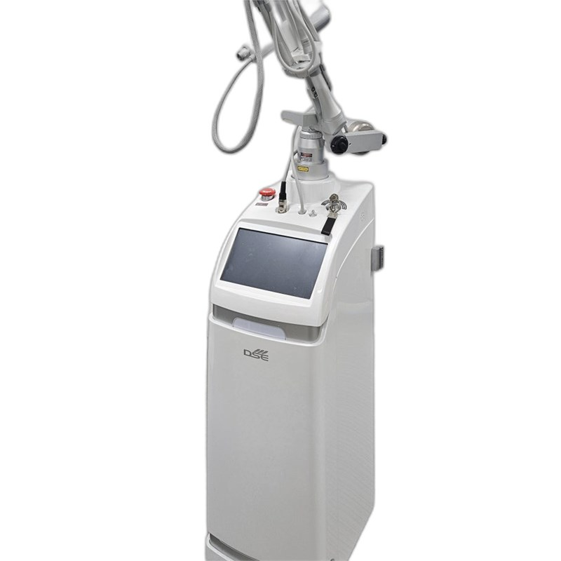
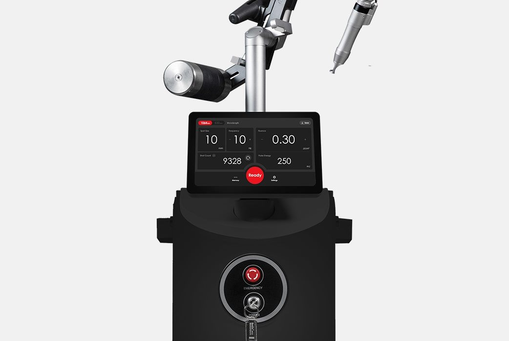
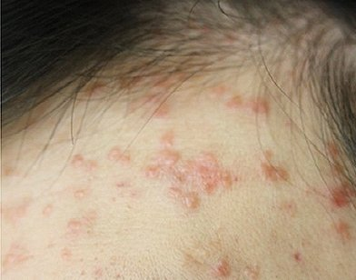
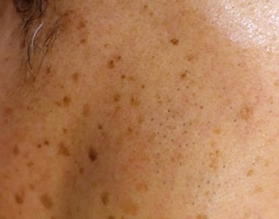

후한의원 네트워크 사례
목 · 18일
목 부위 편평사마귀 — 18일 만에 정리된 사례
23.05.04 → 23.05.22
WHAT IS FLAT WART
편평사마귀는 인유두종 바이러스(HPV)가 피부 겉층에 자리 잡으면서 생기는 작고 낮은 돌기입니다. 높이가 거의 없고 색도 주변 피부와 비슷해, 바쁜 일정 속에서는 피곤해서 올라온 뾰루지쯤으로 넘기기 쉽습니다. 야근과 회식이 이어져 컨디션이 떨어진 뒤에야 개수가 늘어난 것을 알아차리고 강남 진료실을 찾는 경우가 많습니다.
눈에 덜 띄는 색
처음엔 주변 피부와 거의 같은 색이라 밝은 조명 아래에서야 보이고, 점차 옅은 갈색으로 짙어지기도 합니다.
손끝에 살짝 걸리는 높이
윗면이 평평하고 낮아 좁쌀 여드름이나 잡티로 오해받는 일이 잦습니다.
손과 마찰이 닿는 자리
이마·볼·목·손등처럼 손이 자주 가고 셔츠 깃이나 면도날이 스치는 곳에 모여 생깁니다.
줄지어 늘어나는 모양
긁은 자국이나 면도한 결을 따라 새 돌기가 일렬로 생기는 모습이 흔히 보입니다.
WHY REMOVE EARLY
작고 아프지 않다고 미뤄 두는 사이, 바이러스는 조용히 자리를 넓혀 갑니다.
바이러스로 생기는 병변이라 손톱으로 긁은 자리, 아침마다 면도기가 지나가는 자리를 따라 새 돌기가 생길 수 있습니다. 두세 개일 때와 수십 개일 때는 치료에 드는 시간부터 달라집니다.
오래 자리 잡은 병변일수록 제거한 뒤 그 자리에 색이 남거나 흔적이 생길 가능성을 더 신경 써야 합니다. 개수가 적고 얕을 때 정리하면 회복 관리도 비교적 단순해집니다.
저절로 없어지길 기다리는 동안 범위가 얼굴에서 목까지 넓어지면 내원 횟수와 비용도 함께 늘 수 있습니다. 퇴근 후 시간을 쪼개 다니는 직장인에게는 이 부분이 생각보다 큰 부담이 됩니다.
TREATMENT METHOD
한 얼굴 안에서도 편평사마귀 · 쥐젖 · 비립종 · 한관종 · 피지선증식증 · 검버섯 · 점은 생긴 원인과 자리 잡은 깊이가 서로 다릅니다.
겉으로 작아 보이는 돌기가 뿌리는 깊을 수 있고, 넓게 퍼져 보이는 병변이 의외로 얕은 층에 머무는 경우도 있습니다.
그래서 후한의원 강남점은 열을 쓰지 않는 사율침, 깊이에 맞춰 출력을 조절하는 줌 핸드피스 CO2레이저, 제거한 자리의 회복을 돕는 엔디야그 레이저를
병변마다 나눠 배정하고, 상처는 필요한 범위 안에서만 남기는 것을 진료 원칙으로 삼습니다.

A. NEEDLE THERAPY

B. CO2 LASER

C. ND:YAG LASER
제거는 사율침과 CO2레이저가, 회복은 엔디야그가 맡는 식으로 역할을 나누기 때문에
넓은 면적을 한 번에 다루기보다 병변 하나하나에 맞춘 진료가 가능합니다.
PRICE GUIDE
편평사마귀 · 비립종 · 쥐젖 동일 가격으로 제거
편평사마귀는 한 번 정리한 뒤에도 다시 올라오는 경우가 있어, 보이는 돌기를 없애는 일과 재발을 줄이는 관리를 함께 계획하는 것이 좋습니다.
평일에는 저녁 8시 30분까지 진료하므로 신사역·논현 인근 직장에서 퇴근한 뒤 들러 상담받으실 수 있습니다.
FACE & NECK
얼굴과 목을 함께 진행합니다
20개 한도
99,000원
초과분 1개당 5,000원
50개 한도
199,000원
초과분 1개당 4,000원
100개 한도
330,000원
초과분 1개당 3,300원
BODY
가슴 · 복부 · 등 · 허리 등
20개 한도
149,000원
초과분 1개당 7,500원
50개 한도
299,000원
초과분 1개당 5,000원
100개 한도
440,000원
초과분 1개당 3,300원
개수는 원하시는 만큼 체크해 드립니다
가장 신경 쓰이고 놓치고 싶지 않은 부위를 의료진과 충분히 대화하며 꼼꼼하게 체크합니다. 다수의 대표원장 의료진과 10여 명의 전문 스텝이 예약 · 내원 · 전처치 · 본시술 · 후처치 · 주의사항 안내 · 후관리 전 과정에서 각자의 역할에 최선을 다합니다.
※ 위 금액은 이벤트 진행 시점 기준이며 변경될 수 있습니다. 정확한 비용은 상담 시 확인해 주세요.
※ 개인에 따라 시술의 효과는 차이가 있을 수 있으며, 부작용이 발생할 수 있습니다.
DIFFERENTIAL DIAGNOSIS
모양이 닮았어도 생긴 이유가 다르면 쓰는 장비와 순서도 달라지므로, 무엇인지 가려내는 진찰이 첫 단계입니다.
늘어진 결합조직이 작은 살점처럼 매달린 돌기로, 바이러스성이 아니어서 다른 사람이나 다른 부위로 옮지 않습니다. 목·겨드랑이·셔츠 깃이 닿는 자리에 잘 생기며, 감별 후 편평사마귀와 같은 날 함께 정리할 수 있습니다.
BEFORE & AFTER
후한의원 네트워크 사례
목 · 18일
목 부위 편평사마귀 — 18일 만에 정리된 사례
23.05.04 → 23.05.22


후한의원 네트워크 사례
이마 · 약 2개월
이마 편평사마귀 — 약 2개월 치료 후 정리된 사례
23.02.13 → 23.04.11


후한의원 네트워크 사례
헤어라인 · 사율침+레이저
헤어라인 편평사마귀 — 사율침+레이저 병행 치료 사례
21.03.01 → 21.05.25


후한의원 네트워크 사례
볼 · 20일
볼 부위 편평사마귀·색소 병변 — 20일 만에 개선된 사례
23.07.25 → 23.08.15
‘후한의원 네트워크 사례’ 표시는 후한의원 네트워크 지점에서 진행된 치료 사례입니다.
개인에 따라 시술의 효과는 차이가 있을 수 있으며, 부작용이 발생할 수 있습니다.
의료진과 충분한 상담 후 시술을 진행하셔야 합니다.
DOCTORS
5인의 대표원장이 진료합니다.
병변의 종류와 깊이에 따라 침 치료와 레이저 제거의 비중을 나눠 접근합니다.

FAQ
제거한 자리가 아무는 3~7일 동안은 안내받은 항생 연고를 바르거나 습윤 밴드를 붙여 상처를 보호해 주세요. 앉은 딱지는 억지로 떼지 말고 저절로 떨어질 때까지 두어야 흉터와 색소침착 위험을 줄일 수 있습니다.
진찰로 각 돌기가 어떤 병변인지 먼저 구분한 뒤, 편평사마귀와 같은 날 쥐젖·비립종도 함께 제거할 수 있습니다. 병변 종류와 범위에 따라 비용이 달라질 수 있어 상담 때 미리 확인해 드립니다.
편평사마귀는 바이러스로 생기는 병변이라 눈에 보이는 돌기만 없애면 다시 올라오기 쉽습니다. 그래서 사율침으로 국소 면역력을 높여 재발 가능성을 줄이는 방향까지 함께 고려합니다.
습윤 밴드를 붙였다면 다음 날부터 밴드 위로 가벼운 화장을 하셔도 됩니다. 밴드 없이 마무리한 경우에는 미세한 상처가 남아 있을 수 있어 며칠은 자극을 피하는 편이 좋고, 정확한 시점은 시술 후 따로 안내해 드립니다.
후한의원 강남점은 월요일부터 금요일까지 11:00~20:30에 진료하므로 퇴근 후 내원하실 수 있습니다. 평일 점심시간은 13:00~14:30이며, 토요일은 점심시간 없이 10:00~15:00 진료하고 일요일은 휴진합니다.
CONSULTATION
전화·카카오톡·네이버 예약 중 편한 방법으로 문의해 주세요. 예약을 잡는 순간부터 시술 후 관리까지, 단계마다 맡은 스텝이 차례대로 안내해 드립니다.
진료시간
월 · 화 · 수 · 목 · 금 11:00 – 20:30
토요일 10:00 – 15:00 (점심시간 없음)
일요일 휴진
평일 점심시간 13:00 – 14:30
HOO KOREAN MEDICAL CLINIC
신사역 인근 도산대로 후한의원 강남점에서 대표원장 5인과 10여 명의 스텝이 상담부터 후관리까지 단계별로 함께합니다.
지금 전화 상담하기